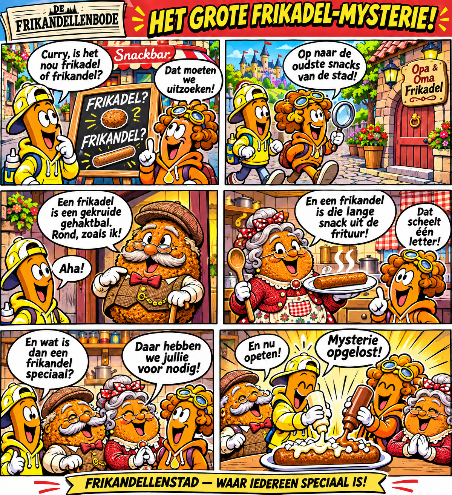

🌭 FRIKANDELLENSTAD — WAAR IEDEREEN SPECIAAL IS! 🌭
📰 Het mysterie is opgelost!
FRIKANDELLENSTAD – De redactie van de Frikandellenbode ontving een dringende vraag: schrijf je nu frikadel of frikandel? Mayo en Curry besloten het uit te zoeken en gingen op bezoek bij Opa en Oma Frikadel.
Opa vertelde trots dat een frikadel een gekruide gehaktbal is. Oma had het antwoord op de andere helft van het raadsel: een frikandel is de bekende langwerpige snack. En de frikandel speciaal? Daar kwamen Mayo en Curry als geroepen!
Een extra letter, een flinke scheut saus en een mysterie minder.